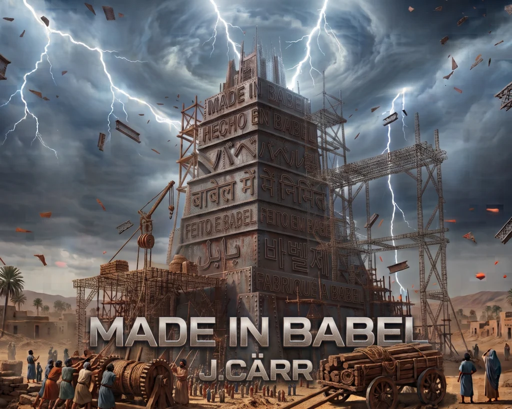
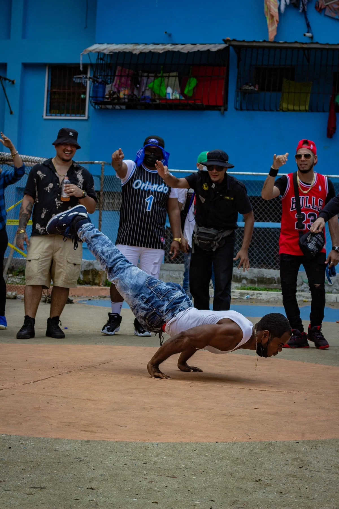

Prensa / EPK
Información oficial para medios, promotores y festivales.

J.Cärr
J.Cärr (@jcarr009) es productor y DJ de música electrónica de Panamá, enfocado en Christian EDM, Future Bass y Dubstep. Su música combina fe, emoción y energía electrónica mediante melodías emotivas, drops de alto impacto y experimentación sonora.
Para entrevistas, material del artista y solicitudes de prensa, escríbenos. Conversemos sobre tu publicación.
J.Cärr en los medios
Lanzamientos, historias y colaboraciones. Explora las publicaciones originales.

J.Cärr estrena “Made in Babel”, una propuesta de Christian EDM construida en siete idiomas
Imagen de la publicación original · Press Noise
Leer publicación ↗
Panamanian Producer J.Cärr Releases “Made in Babel”
Imagen de la publicación original · Press Noise
Leer publicación ↗Playa y Tequila: el remix que viene a alegrar la temporada
Imagen de la publicación original · Mi Diario
Leer publicación ↗
Destacados artistas participan de Cypher Vol. 2
Imagen de la publicación original · Mi Diario
Leer publicación ↗“Playa y Tequila”, producción junto a J.Cärr
Imagen de la publicación original · Día a Día
Leer publicación ↗Cypher Vol. 2, proyecto con participación de J.Cärr
Imagen de la publicación original · Día a Día
Leer publicación ↗